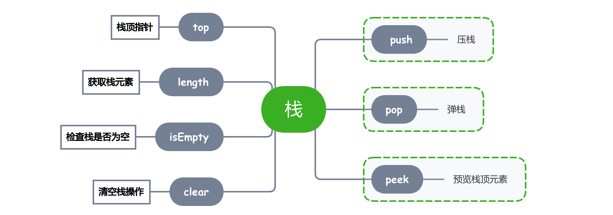

本文主要介绍栈的JavaScript 代码实现，以及栈能够解决的一些常见问题。
栈的要素
当我们使用 JavaScript (或者任何一门编程语言) 在实现栈结构前，需要基本确定栈的几个要素。

top 记录栈顶位置。
pop 执行出栈操作。
push 执行入栈操作。
peek 预览栈顶的元素。
clear 清空栈。
length 获取栈中元素的个数。
1
2
3
4
5
6
7
8
9
10
11
12
13
14
15
16
17
18
19
20
21
22
23
24
25
26
27
28
29
30
31
| class Stack {
constructor() {
this.top = 0;
this.data = [];
}
pop() {
this.data.pop();
this.top++;
}
push(ele) {
this.data[this.top++] = ele;
}
peek() {
return this.data[this.top - 1];
}
clear() {
this.top = 0;
this.data = [];
}
}
let stack = new Stack();
console.log('__________________');
console.log("top == ", stack.top);
console.log("data == ", stack.data);
stack.push(111);
stack.push(222);
stack.push(333);
console.log('__________________');
console.log("top == ", stack.top);
console.log("data == ", stack.data);
|